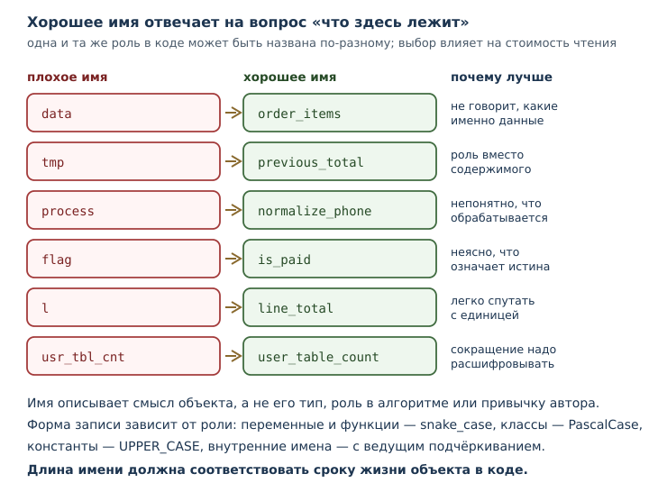
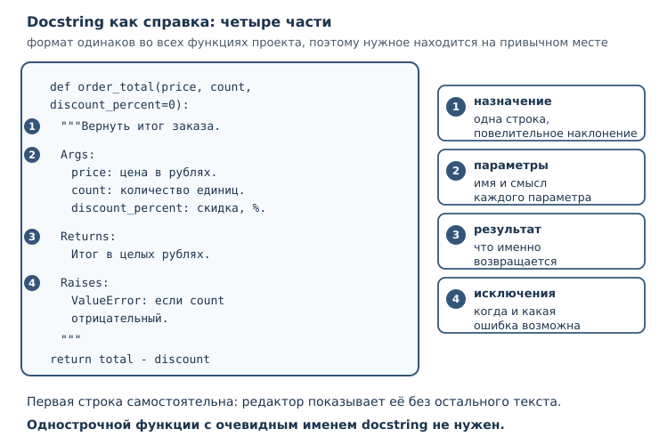

Стиль, форматирование и именование кода
PEP 8, автоформатирование, имена, комментарии и docstring как часть инженерной дисциплины.
В этой главе
Код читают чаще, чем пишут. Автор проводит за набором текста часы, а коллеги — годы: они разбираются в чужой логике при ревью, ищут причину сбоя, добавляют функцию через полгода после того, как автор уволился. Поэтому профессиональный код оценивают не только по тому, что он делает, но и по тому, насколько легко его понять и безопасно изменить.
Стиль — это способ снизить стоимость чтения. Он не про красоту и не про личный вкус: одинаково оформленный код быстрее разбирать, в нём легче замечать настоящие ошибки, а разногласия о запятых заменяются одной командой форматтера. В этой главе мы разберём, что именно нормирует PEP 8, как передать оформление инструментам, каких имён избегать и как писать комментарии и docstring, которые помогают, а не мешают.
49.1 Что вы сможете после этой главы
К концу главы вы будете уметь следующее.
- объяснять, зачем команде единый стиль кода и почему это инженерное решение;
- применять базовые правила PEP 8 и понимать, где стандарт оставляет выбор;
- передавать форматирование и проверки инструментам, а не делать их вручную;
- выбирать имена по соглашению об именовании и объяснять свой выбор;
- писать комментарии, которые объясняют причину, а не пересказывают код;
- оформлять docstring так, чтобы им можно было пользоваться как справкой;
- заменять магические числа именованными константами.
49.2 Почему стиль — инженерный инструмент
Представьте две функции, которые делают одно и то же.
def c(a, b, d=0):
t = a * b
return t - t * d // 100
def order_total(price, count, discount_percent=0):
total = price * count
return total - total * discount_percent // 100
Поведение одинаковое, но вторую функцию можно понять, не заглядывая в тело: видно, что считаются деньги, что скидка задана в процентах и что результат — целые рубли. Стиль здесь работает как документация, которую невозможно забыть обновить.
Стиль кода — согласованный набор правил оформления, который делает код единообразным и предсказуемым для читателя. У этого определения два важных следствия.
Первое: стиль — про согласованность, а не про оригинальность. Два разработчика могут предпочитать разные способы расстановки пробелов; если каждый следует своему вкусу, файл становится пёстрым. Единое правило, даже не идеальное, читается лучше, чем идеальные правила вразнобой.
Второе: стиль — часть инструментов, а не ритуал. Форматтер убирает обсуждение оформления из ревью; линтер ловит то, что человек пропускает усталым глазом; проверка типов находит несовместимые вызовы. Всё это снижает число дефектов и стоимость сопровождения.
У стиля есть и измеримая польза для истории изменений. Если весь код оформлен одинаково, диффы показывают смысловые правки, а не переставленные пробелы. Одна перемешанная с форматированием правка способна скрыть настоящую ошибку в сотне строк шума.
49.3 PEP 8: что нормирует стандарт
PEP 8 — официальное руководство по стилю кода Python: отступы, пробелы, длина строк, именование. Оно входит в серию документов PEP (Python Enhancement Proposal), в которых сообщество описывает устройства языка и договорённости вокруг него.
PEP 8 — не синтаксис. Код, нарушающий его, работает, и интерпретатор не скажет ни слова. Это договорённость людей, которую поддерживают инструменты. Название пишется с пробелом: PEP 8.
Перечислим то, что встречается чаще всего.
Отступы. Четыре пробела на уровень, табуляция не используется. Это правило вы уже применяли, когда писали блоки; теперь оно стало частью договорённости о стиле.
Длина строки. PEP 8 рекомендует не превышать 79 символов. Практика
современных инструментов иная: black и ruff format по умолчанию
переносят строки после 88 символов. Обе границы разумны, но выбрать нужно
одну и зафиксировать в конфигурации, иначе форматтер и стандарт будут спорить
друг с другом.
Пробелы. Вокруг операторов присваивания и сравнения — по одному пробелу; после запятой — пробел, перед ней — нет. Внутри скобок лишних пробелов нет.
total = price * count # пробелы вокруг оператора
print(total, "рублей") # пробел после запятой
Знак = ведёт себя по-разному в зависимости от смысла: в присваивании
пробелы есть, а в значении параметра по умолчанию и в именованном аргументе
их нет, потому что там = обозначает не присваивание.
def order_total(price, count, discount=0):
return price * count
result = order_total(price=250, count=3, discount=10)
Пустые строки. Две пустые строки между определениями функций верхнего уровня, одна — между методами внутри класса. Внутри тела функции пустая строка разделяет логические части.
Импорты. Каждый импорт на своей строке, группы разделены пустой строкой: сначала стандартная библиотека, затем сторонние пакеты, затем модули проекта.
import math
from pathlib import Path
from pricing import order_total
import cli
Сравнения с None. По PEP 8 сравнение с None выполняется через is и
is not, а не через ==: None — единственный объект своего типа, и
проверка идентичности точнее выражает намерение.
Следовать всем правилам вручную не нужно и вредно: на это уходит внимание, которое лучше потратить на логику. Правила существуют, чтобы их применял инструмент.
49.4 Форматтер и линтер: что автоматизируется
Разделение обязанностей между инструментами мы уже обсуждали в главе о структуре проекта (линтеры и форматтеры). Здесь важно понять, что именно каждый из них делает с точки зрения стиля.
Форматтер переписывает код по правилам оформления: отступы, пробелы,
кавычки, переносы. Он не меняет поведение программы и не спорит о смысле.
Современный стандарт — black и совместимый с ним ruff format; они дают
почти одинаковый результат, поэтому переход между ними почти незаметен.
Посмотрим на файл, оформленный небрежно:
def order_total(price,count,discount = 0):
total=price*count
return total-total*discount//100
def format_receipt(price,count,discount=0):
amount=order_total(price,count,discount)
return f"Товаров: {count}, к оплате: {amount} рублей"
Команда проверки показывает, что изменит форматтер, ничего не записывая:
$ ruff format --diff pricing.py
--- pricing.py
+++ pricing.py
@@ -1,8 +1,8 @@
-def order_total(price,count,discount = 0):
- total=price*count
- return total-total*discount//100
+def order_total(price, count, discount=0):
+ total = price * count
+ return total - total * discount // 100
-def format_receipt(price,count,discount=0):
- amount=order_total(price,count,discount)
+def format_receipt(price, count, discount=0):
+ amount=order_total(price, count, discount)
return f"Товаров: {count}, к оплате: {amount} рублей"
1 file would be reformatted
Обратите внимание: изменилось только оформление. Если запустить команду без
--diff, файл будет перезаписан, и обсуждать расстановку запятых на ревью
больше не придётся. black --check делает то же самое в режиме проверки: он
ничего не меняет, но сообщает, какие файлы отформатированы иначе.
Линтер ищет то, что нельзя исправить перестановкой пробелов: неиспользуемые импорты, подозрительные сравнения, вводящие в заблуждение имена. Вот файл с несколькими типичными нарушениями:
import os
import sys
def order_total(price, count, discount=0):
total = price * count
l = total - total * discount // 100
if discount == True:
return l
return l
Проверка сообщает о каждом нарушении отдельно, с именем правила:
$ ruff check --output-format=concise discounts.py
discounts.py:1:8: F401 [*] `os` imported but unused
discounts.py:2:8: F401 [*] `sys` imported but unused
discounts.py:7:5: E741 Ambiguous variable name: `l`
discounts.py:8:8: E712 Avoid equality comparisons to `True`; use `discount:` for truth checks
Found 4 errors.
[*] 2 fixable with `--fix` (1 unsafe fix available with `--fix --unsafe-fixes`).
Коды правил полезно знать: F401 — неиспользуемый импорт, E741 — имя,
которое легко спутать (l, O, I), E712 — сравнение с True там, где
достаточно самого значения. Часть нарушений линтер исправляет сам ключом
--fix, остальные требуют решения человека.
Проверка типов идёт дальше и сверяет значения с аннотациями. Инструмент
mypy читает подсказки типов и сообщает о несовместимых вызовах ещё до
запуска программы.
def format_total(total: int) -> str:
return f"Итого: {total} рублей"
def main() -> None:
total = format_total("675")
print(total)
$ mypy report.py
report.py:6: error: Argument 1 to "format_total" has incompatible type "str"; expected "int" [arg-type]
Found 1 error in 1 file (checked 1 source file)
Сообщение указывает файл, строку, аргумент и ожидаемый тип. Подробнее о mypy — в главе про аннотации типов.
Все три инструмента настраиваются в pyproject.toml и запускаются в
непрерывной интеграции: тогда стиль проверяется автоматически, а не по
настроению ревьюера.
49.5 Соглашение об именовании
Соглашение об именовании — правила выбора имён: snake_case, PascalCase, UPPER_CASE, осмысленность, длина, отсутствие вводящих в заблуждение сокращений.
В Python приняты четыре формы записи, и каждая связана с ролью объекта.
| Что именуем | Форма | Пример |
|---|---|---|
| переменные и функции | snake_case |
order_total, max_count |
| классы и исключения | PascalCase |
Order, ValidationError |
| константы | UPPER_CASE |
MAX_RETRIES, DEFAULT_TIMEOUT |
| внутренние имена | _snake_case |
_cache, _normalize |
Форма записи — только начало. Осмысленность важнее: имя должно отвечать на вопрос «что здесь лежит» без чтения тела.
total = 0
for item in items:
total += item.price
s = 0
for x in y:
s += x.price
Второй вариант короче на несколько символов и дороже на минуту чтения. Имена
x, y, s не сообщают ничего; в крупном файле через час их значение
придётся восстанавливать по контексту.

Несколько практических правил.
Длина. Короткое имя годится для очевидного контекста (i в маленьком
цикле), длинное — для того, что живёт долго. Слишком длинные имена тоже
вредны: total_price_of_all_items_in_cart_with_discount превращает код в
простыню.
Единицы измерения полезно включать в имя: timeout_seconds,
price_kopecks. Это защищает от ошибок, когда рядом живут значения в разных
единицах.
Логические значения называют так, чтобы они читались как утверждение:
is_active, has_access, can_retry. Тогда условие if is_active: читается
почти как фраза.
Не перекрывайте встроенные имена. Если связать имя list, sum или
print со своим значением, стандартная функция перестанет работать, и ошибка
проявится не там, где она возникла. Линтер подскажет о перекрытии, но лучше
не создавать его вовсе.
Сокращения допустимы только общепринятые. url, id, http понятны
всем, usr_tbl_cnt — нет. Если приходится расшифровывать имя вслух, его стоит
переписать.
Имя — это часть контракта. Читатель верит имени, поэтому обманывать нельзя:
функция get_user не должна изменять данные, а переменная count не должна
хранить список.
49.6 Комментарии: объяснять причину
Стиль комментариев — правила работы с пояснениями в коде: объяснять «почему», не пересказывать код, поддерживать актуальность, не комментировать очевидное.
Комментарий оправдан, когда код не может рассказать важное сам. Сравните:
# умножаем цену на количество
total = price * count
# Скидка считается в целых рублях: копейки округляются вниз,
# чтобы итог совпадал с бухгалтерским расчётом.
discount = total * 10 // 100
Первый комментарий бесполезен: он повторяет то, что видно из строки. Второй
объясняет решение, которое нельзя вывести из кода: почему используется //,
а не /, и откуда взялось правило.
Проверим, что комментарии не влияют на результат, — это единственное, о чём стоит помнить, глядя на примеры выше:
total = 250 * 3
discount = total * 10 // 100
print(total - discount)
675
Ещё несколько правил, которые экономят время.
Пишите о причине, а не о механике. «Почему так» переживает рефакторинг; «что здесь происходит» устаревает при первой же правке.
Следите за актуальностью. Устаревший комментарий хуже отсутствующего: он уверенно сообщает неправду. Если меняете поведение, проверьте комментарии рядом.
Не оставляйте закомментированный код. Он не исполняется, не проверяется и постепенно превращается в мусор. История изменений хранит старые версии лучше, чем комментарий.
Пометки о будущей работе полезны, если у них есть владелец и срок. В
командах их оформляют единообразно и проверяют линтером: правила группы TD
следят за тем, чтобы такая пометка содержала автора и описание задачи, а не
висела безымянной годами. Безымянная пометка — это способ забыть о проблеме,
а не напоминание.
Не дублируйте docstring. Если функция уже описана строкой документации, комментарий перед ней обычно лишний.
Комментарии и язык. В русскоязычной команде комментарии пишут по-русски, код и имена — латиницей. Главное — единообразие: смесь двух языков в одном файле читается хуже любого из них.
49.7 Стиль docstring
Docstring — строковый литерал первым оператором функции, класса или модуля
(подробнее). Он остаётся частью объекта и служит
справкой: его показывают help(), среды разработки и генераторы
документации.
Стиль docstring — согласованный формат описания: краткое назначение, параметры, возвращаемое значение, исключения. Формат важен не меньше содержания: читатель привыкает к структуре и находит нужное в привычном месте.
Самый распространённый формат — Google style. Первая строка — короткое описание в повелительном наклонении, затем пустая строка, затем разделы.
def order_total(price, count, discount_percent=0):
"""Вернуть итог заказа в целых рублях.
Args:
price: цена единицы товара в рублях.
count: количество единиц.
discount_percent: скидка в процентах от суммы.
Returns:
Итог заказа после скидки, в целых рублях.
Raises:
ValueError: если количество отрицательное.
"""
total = price * count
return total - total * discount_percent // 100
print(order_total(250, 3, 10))
print(order_total.__doc__.splitlines()[0])
675
Вернуть итог заказа в целых рублях.
Первая строка печатается как краткая справка. Именно её видят в подсказке редактора, поэтому она должна быть самостоятельной: «Вернуть итог заказа», а не «Эта функция делает то, что описано ниже».
Другие форматы решают ту же задачу иначе. NumPy style перечисляет параметры
столбцом под заголовком Parameters, reStructuredText (его использует Sphinx)
— директивами :param: и :returns:. Выбор формата — вопрос договорённости в
проекте; смешивать форматы в одном файле не стоит.
Docstring нужен не каждой функции. Однострочная функция с очевидным именем
(def double(n): return n * 2) в пояснении не нуждается. Но как только у
функции появляются нетривиальные параметры, побочные эффекты или исключения,
docstring становится частью контракта.
Проверим, что бывает без него:
def area(width, height):
return width * height
print(area.__doc__)
None
Значение None означает, что документации нет. Это не ошибка, но читателю
придётся выяснять смысл параметров самостоятельно.

49.8 Магические числа и константы
Магическое число — числовая или строковая константа в коде без объяснения смысла. Заменяется именованной константой.
def seconds_per_day(days):
return days * 86400
Число 86400 знает наизусть не каждый. Сравните:
SECONDS_PER_MINUTE = 60
MINUTES_PER_HOUR = 60
HOURS_PER_DAY = 24
def seconds_per_day(days):
return days * HOURS_PER_DAY * MINUTES_PER_HOUR * SECONDS_PER_MINUTE
Поведение то же, но теперь видно, из чего складывается сутки. Проверим:
SECONDS_PER_MINUTE = 60
MINUTES_PER_HOUR = 60
HOURS_PER_DAY = 24
def seconds_per_day(days):
return days * HOURS_PER_DAY * MINUTES_PER_HOUR * SECONDS_PER_MINUTE
print(seconds_per_day(2))
172800
Именованная константа полезна ещё и тем, что её можно изменить в одном месте. Если завтра правило изменится, поиск по имени найдёт все места использования, а поиск по числу — нет.
Есть и обратная крайность: не стоит превращать в константу каждое число.
range(2, 10) в локальном цикле читается нормально, а START_INDEX = 2 в
единственном месте добавляет лишний уровень косвенности. Правило простое:
именуйте то, у чего есть смысл, а не то, что просто встретилось.
Где объявлять константы? В начале модуля, сразу после импортов: тогда они видны и доступны всем функциям модуля. Если константа нужна нескольким модулям, её выносят в отдельный модуль настроек — об этом в главе о структуре проекта.
49.9 Как стиль закрепляется в проекте
Правила работают, только если их применяет инструмент, а не память.
Один форматтер на проект. Два форматтера с разными настройками будут
переписывать файлы друг за другом. Выберите один, зафиксируйте в
pyproject.toml и запускайте одинаково у всех.
Форматтер — до ревью, линтер — в ревью. Переформатирование смешивается с смысловыми правками и прячет их. Хорошая привычка — отдельный коммит «только форматирование», а затем коммиты с изменениями.
Не переформатируйте чужой код без причины. Массовая правка оформления в файле, который вы не меняли по смыслу, создаёт шум в истории и конфликты в ветках. Стиль — повод договориться, а не повод переписать всё вокруг.
Проверки — в непрерывной интеграции. Если проверка стиля обязательна, она должна запускаться командой и давать понятный отказ (непрерывная интеграция). Ручная проверка «когда вспомним» не работает.
Стиль проекта важнее личного вкуса. Придя в команду, вы принимаете её правила оформления — как принимаете язык общения. Исключения обсуждаются, но не вводятся молча.
49.10 Типичные ошибки
- Считать стиль вкусовщиной. Единые правила снижают стоимость чтения и ревью; это измеримая польза, а не эстетика.
- Форматировать вручную. Пробелы и переносы должен расставлять инструмент, иначе они отвлекают от логики.
- Смешивать форматирование и смысловые правки. Дифф становится нечитаемым, а ошибка — незаметной.
- Давать имена по типу, а не по смыслу.
data,info,tmp,valueне объясняют, что внутри. - Перекрывать встроенные имена. Своя функция
sumломает ожидания читателя и стандартную библиотеку. - Комментировать очевидное. Комментарий «умножаем на два» рядом с
n * 2занимает место и не добавляет знания. - Оставлять устаревшие комментарии. Они хуже отсутствующих: уверенно вводят в заблуждение.
- Писать docstring без разделов. Сплошной абзац трудно читать; параметры и возвращаемое значение должны быть на своих местах.
- Разбрасывать магические числа.
86400и0.15без имени невозможно проверить и опасно менять. - Превращать каждое число в константу. Косвенность ради косвенности усложняет код не меньше, чем магические числа.
49.11 Упражнения
1. Нарушения оформления
Найдите нарушения PEP 8 в фрагменте и запишите исправленный вариант:
def area(width,height):
result=width*height
return result
Объясните, какие именно правила нарушены.
2. Длинная строка
Перепишите строку так, чтобы она не превышала 88 символов, не меняя смысла:
print(f"Товаров: {count}, сумма без скидки: {total}, скидка: {discount}, к оплате: {total - discount} рублей")
3. Именование переменных
Переименуйте переменные так, чтобы код читался без пояснений:
a = 250
b = 3
c = 10
d = a * b
e = d * c // 100
print(d - e)
4. Формы записи
Для каждого имени определите, что оно обозначает, и проверьте, соответствует
ли форма роли: max_retries, HttpClient, parse_config, DEFAULT_TIMEOUT,
_cache, OrderError.
5. Плохие имена
Объясните, чем плохи имена data, tmp, process, flag, l. Предложите
по одному осмысленному варианту для каждого, указав контекст, в котором имя
уместно.
6. Комментарий о причине
Замените комментарий, пересказывающий код, комментарием о причине:
# прибавляем единицу к счётчику
counter += 1
Придумайте ситуацию, в которой такой код действительно требует пояснения.
7. Docstring
Напишите docstring в стиле Google для функции:
def ticket_price(age, base=600):
if age < 18:
return base // 2
return base
Опишите параметры, возвращаемое значение; проверьте первую строку через
__doc__.
8. Магические числа
Замените магические числа именованными константами, не меняя результата:
def late_fee(amount):
return amount + amount * 5 // 100
Проверьте, что результат совпадает для amount = 200.
9. Разбор сообщений линтера
Даны сообщения:
report.py:3:1: F401 `os` imported but unused
report.py:7:5: E741 Ambiguous variable name: `l`
report.py:9:8: E712 Avoid equality comparisons to `True`; use `flag:` for truth checks
Объясните, что нарушено в каждом случае и как исправить код.
10. Мини-задача: привести модуль в порядок
Перепишите модуль целиком: оформление, имена, магические числа, docstring, комментарии.
import os
def c(p,q,d = 0):
t=p*q
# вычитаем скидку
l=t-t*d//100
return l
Что изменилось и почему? Проверьте, что функция возвращает то же значение для
c(250, 3, 10).
49.12 Проверка понимания
- Почему единый стиль кода называют инженерным инструментом, а не вкусовщиной?
- Что нормирует PEP 8 и почему нарушение этих правил не ошибка для интерпретатора?
- Чем занимается форматтер, а чем — линтер?
- Что проверяет mypy и почему это не заменяет тесты?
- Какие формы записи имён приняты для переменных, классов, констант?
- Почему не стоит перекрывать встроенные имена?
- Чем полезный комментарий отличается от бесполезного?
- Какие разделы обычно включает docstring в стиле Google?
- Что такое магическое число и как его заменить?
- Почему массовое переформатирование чужого кода не приветствуется?
49.13 Что дальше
Вы научились делать код единообразным и объяснимым. Но стиль — только часть профессиональной привычки: следующий шаг — идиомы языка и ловушки, на которых спотыкаются даже опытные разработчики. О них — в главе о Pythonic-коде.